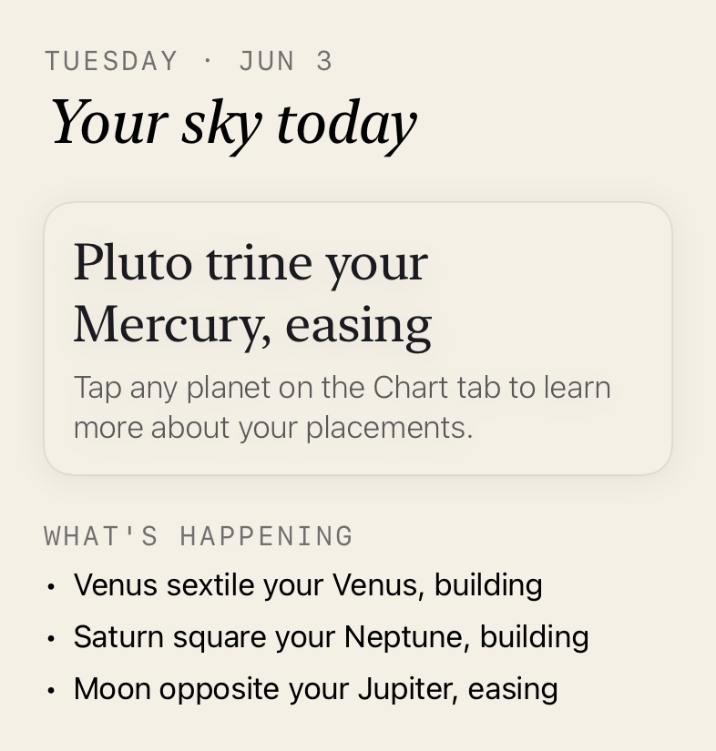
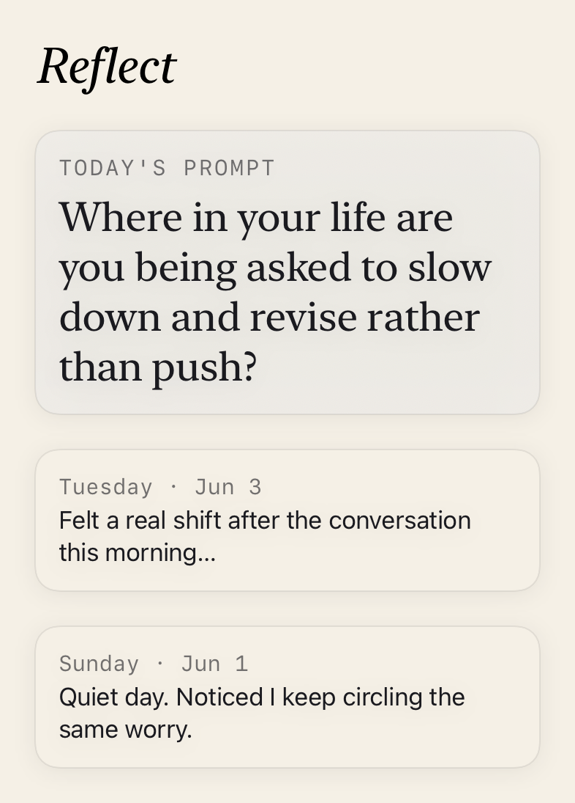

The whole chart
Everything a real astrology practice needs.
One app, five ways in — all grounded in the same real chart.

Today
A daily reading grounded in the transits actually happening to your chart, plus the live moon phase and its ritual.
Chart
An interactive natal wheel. Tap any planet for a reading rooted in its real placement. See your Big Three and what makes your chart rare.

Compatibility
Real synastry and composite charts for you and the people in your life, with results you can share.
Palm Reading
On-device by design and in final accuracy testing. We're telling you it's not ready rather than faking it.

Reflect
A journal with prompts tied to your current transits, so the questions actually fit the moment you're in.